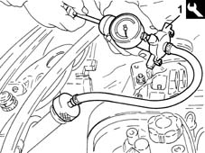
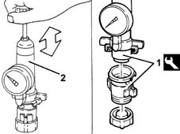

0510C30 cooling system - tightness test
- Path
- Procedures > 05 DIAGNOSTICS > 0510 VARIOUS CONTROLS > 0510C check systems > 0510C30 cooling system - tightness test
- Kind
- repair procedure (removal / refitting; the operation number is the code)
- Applies to
- engines: 1.2 8v, 1.2 16v, 1.4 16v; all production periods
- Interactive page
- https://sloeber94.github.io/elrnDB-lYpsln/en/#/2428843
Applies to: engines: 1.2 8v, 1.2 16v, 1.4 16v; all production periods
Unscrew and remove the cap from the coolant expansion tank.
1. Fit the engine cooling system leakage test equipment on the tank filler.
 | Name | Country |
|---|---|---|
1 | Engine cooling system leakage test kit.. | 1.895.377.001 |

Applies to: engines: 1.2 8v, 1.2 16v, 1.4 16v; all production periods
Manually pressurize the system and check that the pressure gauge reading remains constant at the specified value.
 | Measurement | Value | |
|---|---|---|---|
- | Check pressure seal (bar) | 1.08 |
Remove the tool from the expansion tank.
1. Screw the tool fitted with the specific connector onto the engine coolant tank cap.
| Name | Country |
|---|---|---|
1 | Engine cooling system leakage test kit.. | 1.895.377.001 |
2. Manually pressurize the cap and check on the pressure gauge that the pressure relief valve on the cap opens at the specified pressure.
| Measurement | Value | |
|---|---|---|---|
- | Opening pressure check (bar) | 0.98 |

Applies to: engines: 1.2 8v, 1.2 16v, 1.4 16v; all production periods
Undo the cap fromt he tool and fit it on the engine coolant tank.